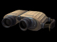
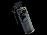

Covert Ops
Role
Deploys Radar to reveal enemy units, completes Hack objectives and hacks enemy deployables with the Hacking Tool, uses the Third Eye Camera to spy on and ambush the enemy, can steal enemy identities, disable enemy vehicles and deployables with the EMP Grenade, backstab with Knife, and use the Smoke Grenade for concealment.
Specialty
Sniper, Disguise and Hacker
Objective
 Hacking
Hacking
Weapons
Equipment
- Radar Deploy Tool
- Hacking Tool
- Third Eye Camera
- Smoke Grenade
- EMP Grenades
Deployables
Instructional info

Radar Deploy Tool:
To place a radar, select the Deploy Tool from the weapon menu and press the "Mouse 1" button to activate the Deploy Tool. The camera should now pull into third person view and a colored wireframe outline of radar deployable should be visible. If the deployable grid is red or yellow it means the radar  cannot be placed in this location. Move around the map and find a location where the placement grid is green. Once a green deploy location has been located press the "Mouse1" button again to deploy.
cannot be placed in this location. Move around the map and find a location where the placement grid is green. Once a green deploy location has been located press the "Mouse1" button again to deploy.
 Remember: You can only deploy deployables in friendly territory.
Remember: You can only deploy deployables in friendly territory.
Hacking Tool:
Only the GDF Covert Ops can hack Strogg deployables, disabling them for 60 seconds.The Covert Ops can hack objectives and Strogg deployables by approaching the target and holding the Use Key ("Default F") when the hack icon appears. Continue to hold the Use Key (Default F) until the target is fully hacked. Deployables can only be hacked temporarily before they are reactivated.
Third Eye Camera:
The GDF Covert Ops' Third Eye Camera is a remote camera, a short-range radar, and a bomb. Equip and toss this camera ideally in a high traffic location or a location of strategic importance to ensure enemies will approach. Its recommended the camera be hidden if possible to ensure the enemy doesn't spot the camera and avoid it. Once the camera is placed hide in a safe location and press alt-fire (Default Mouse2) to activate the camera view. Press fire (Default Mouse1) at any time to detonate the camera.

Smoke Grenade:
Smoke Grenades function like regular grenades. Equip the grenade and press fire to throw it.
Be aware your Smoke Grenade won’t hide you or your teammates or their vehicles from enemy turrets, they can see right through it. So you could use your Smoke Grenades to lure the enemy into range of your turrets.
 EMP Grenade:
EMP Grenade:
EMP Grenade is used to temporarily disable enemy vehicles and deployables. It will also do some damage to infantry.
Special Abilities:
- Disguise: The Covert Ops can disguise himself as an enemy infantry by approaching a disabled enemy and holding the Use Key ("Default F") on the enemy body when the disguise icon appears. The Covert Ops will then disguise himself allowing him to mingle undetected with the enemy. Note that attempting to fire your weapons will break your disguise. Only knifing enemies in the back will allow you to keep your disguise.
- Backstab: Only the GDF Covert Ops class can inflict extra Backstab damage with the Knife.
Grenades:
- All grenades can be thrown slightly further by holding down the Fire key [Mouse1 Default].
- GDF Grenades can be lobbed a shorter distance by hitting Alt-Fire [Mouse2 Default].
- You can also use your grenades to harmlessly explode enemy mines.